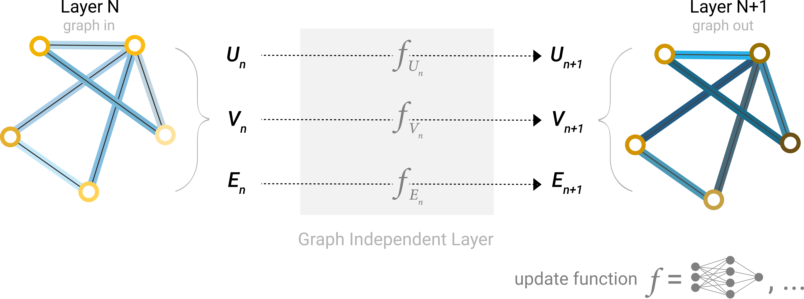

GNN(Graph Neural Networks)
이제부터는 그래프가 순열 불변(Permutation invariant)의 행렬 형식이 되어 있다고 하고, 그래프 예측 작업을 해결하기 위해 GNN을 사용하는 방법을 살펴보겠습니다. GNN은 그래프의 모든 속성(노드, 엣지, 전역)에 대해 그래프 대칭성(순열 불변성)을 유지하는 최적화된 변환 과정입니다. 이번 글에선 Graph Nets architecture schematics를 활용한 “메시지 전달 신경망(Message Passing Neural Network)” 프레임워크를 이용해서 GNN을 구축해보겠습니다. GNN은 “그래프-인, 그래프-아웃” 아키텍처를 채택합니다. 이 아키텍쳐는 GNN 모델이 노드, 엣지 및 전역에 정보가 담겨있는 그래프를 입력값으로 받아들이고 입력된 그래프의 연결성을 변화시키지 않으면서 임베딩을 점진적으로 변환합니다.
The Simplest GNN
우선 그래프의 연결성을 사용하지 않는 가장 간단한 GNN 아키텍처부터 시작하겠습니다. 이전 다이어그램에서는 단순하게 표현하기 위해 스칼라를 사용해서 그래프 속성을 표현했지만 실제로는 피쳐 벡터를 사용합니다.
이 GNN은 그래프의 각 구성요소에 대해 별도의 다층 퍼셉트론(MLP)을 사용합니다. 우리는 이걸 GNN 레이어라고 부릅니다. 각 노드 벡터에 대해 MLP를 적용하고 학습된 노드 벡터를 다시 가져옵니다. 각 에지에 대해서도 동일한 작업을 수행해서 엣지별 임베딩을 학습합니다. 또 전체 그래프에 대해서도 단일 임베딩을 학습하는 전역 컨텍스트 벡터에 대해서도 동일한 작업을 수행합니다.

간단한 GNN의 단일 레이어 이미지입니다. 그래프가 입력값이고 각 구성요소(V, E, U)는 MLP에 의해 업데이트되어 새로운 그래프를 생성합니다.
GNN은 입력된 그래프의 연결성을 업데이트하지 않기 때문에 입력 그래프와 동일한 인접성 목록(adjacency list)과 동일한 수의 피쳐 벡터로 GNN 출력 그래프를 설명합니다. 하지만 출력 그래프에는 노드, 엣지 및 전역 컨텍스트가 업데이트되므로 임베딩이 업데이트 되죠. 정리해보면 GNN은 입력한 그래프의 연결성을 변경하지 않고 임베딩을 점진적으로 변환합니다.
GNN Predictions by Pooling Information
자, 이제 간단한 GNN을 구축했습니다. 그렇다면 위에서 설명한 작업에서 어떻게 예측을 할 수 있는 걸까요?
여기서는 이진 분류의 경우를 설명하겠지만, 이 프레임워크는 쉽게 다중 클래스나 회귀로 확장할 수 있습니다. 그래프에 이미 노드 정보가 포함되어 있다면, 노드에 대한 이진 예측을 위해 각 노드 임베딩에 선형 분류기(linear classifier)를 적용하면 될 겁니다.
하지만 물론 항상 간단한 일만 있는 건 아니겠죠. 예를 들어 그래프 엣지에는 정보가 있지만 노드에는 정보가 없는 경우라면 어떨까요? 노드 예측을 위해선 엣지에서 정보를 수집해서 노드에 해당 정보를 제공할 수 있는 방법이 필요합니다. 그 방법은 바로 풀링(Pooling)입니다. 풀링은 2단계로 구성됩니다.
1.풀링할 각 항목에 대해 각 임베딩을 수집해 행렬로 연결
2.수집된 임베딩은 합계 연산을 통해 집계
풀링 연산은 \(\rho\)로 표현하고, 엣지에서 노드로 정보를 수집하는 것을 \(P_{E_{n} \rightarrow V_{n}}\)으로 나타냅니다.
엣지 수준의 정보만 있다면 풀링을 이용해서 정보를 필요한 곳으로 라우팅 하세요. 모델은 아래와 같습니다.

만약 노드 수준의 정보만 있고, 이진 엣지 수준 정보를 예측하는 경우에도 아래 모델을 이용하면 됩니다.

노드 수준의 정보만 있고, 이진 글로벌 속성을 예측해야 하는 경우에는 어떨까요? 이 경우엔 사용 가능한 모든 노드 정보를 한데 모아 집계합니다. 이러한 접근은 CNN의 Global Average Pooling 레이어와 유사합니다. 엣지 정보만 있을 때도 마찬가지고요.

보통 분자 속성을 예측할 때가 이런 경우입니다. 예를 들어 원자 정보와 연결성이 있는 경우에 분자의 독성 여부와 특정한 향기(장미) 여부를 확인한다면 위 모델을 사용하면 됩니다. 예제에서 등장하는 분류 모델 \(c\)는 다른 Differentiable Model로도 대체할 수 있고, 혹은 선형 모델을 이용해 다중 클래스 분류에도 적용할 수 있습니다.

지금까지 간단한 GNN 모델을 구축하고, 그래프의 서로 다른 부분 간의 정보를 라우팅하면서 이진 예측을 하는 구조를 살펴봤습니다. 이 풀링 기법은 보다 정교한 GNN 모델을 구축하기 위한 빌딩 블록 역할을 할 겁니다. 만약 새로운 그래프 속성이 있다면, 한 속성에서 다른 속성으로 정보를 전달하는 방법을 정의하기만 하면 됩니다.
지금까지 살펴본 GNN 공식에서는 GNN 레이어 내부에서 그래프의 연결성을 전혀 사용하지 않다는 다는 점 유의하시길 바랍니다. 각 노드는 독립적으로 처리됩니다. 엣지도 마찬가지고, 전역 컨텍스트도 마찬가지 입니다. 예측을 위해 정보를 풀링할 때만 그래프의 연결성을 사용합니다.
Passing messages between parts of the graph
지금부터는 GNN 레이어 내부에서 그래프의 연결성을 사용하는 방법을 살펴보겠습니다. 학습된 임베딩이 그래프 연결성을 인식하도록 하기 위해선 GNN 레이어 내에서 풀링을 사용하면 됩니다. 이렇게 하면 더 정교한 예측을 할 수 있죠. 이웃한 노드나 엣지가 서로 정보를 교환해서 해당 노드의 상태를 업데이트하는 이른바 Message Passing을 이용하면 이런 정교한 예측을 수행할 수 있습니다.
Message Passing은 3단계로 진행됩니다.
그래프의 각 노드에 대해 인접한 모든 노드 임베딩을 수집
합계 합수를 통해 모든 임베딩(메시지)을 집계합
풀링된 모든 메시지는 학습된 신경망(업데이트 함수)을 통해 전달
풀링이 노드나 엣지에 적용되는 것처럼, Message Passing도 마찬가지 입니다. 여튼 이 단계는 그래프의 연결성을 괄요하기 위한 핵심 과정입니다. 이제부터는 GNN 레이어에서 Message Passing를 더욱 정교하게 변형하여 표현력과 성능이 향상된 GNN 모델을 표현해보겠습니다.
이렇게 일련의 연산을 적용하면 가장 간단한 유형의 MP GNN 계층이 됩니다.
이러한 접근 방식은 합성곱(standard convolution)을 연상시킵니다. MP와 합성곱은 본질적으로 요소의 값을 업데이트하기 위해 요소의 이웃 정보를 집계하고 처리하는 연산입니다. 그래프에서 요소는 노드이고 이미지에선 픽셀이죠. 차이점이라면 이미지에선 각 픽셀마다 정해진 수의 인접요소가 있지만 그래프에선 인접 노드의 수가 가변적이라는 거겠죠.
MP GNN 레이어를 쌓아올리면 결국 전체 그래프의 정보를 통합할 수도 있습니다. 그리고 세 레이어를 지나면 노드 하나는 자신으로부터 세 단계 떨어진 노드에 대한 정보를 갖게 될 겁니다. 새로운 정보 소스를 포함하도록 아키텍처 다이어그램을 업데이트 해보겠습니다.

위 다이어그램은 1도 거리의 인접 노드를 풀링해서 그래프의 노드 표현을 업데이트하는 GCN(Graph Convolutional Network) 아키텍처의 모식도입니다.
Learning edge representations
우리가 사용할 데이터셋이 항상 노드, 엣지, 전역 컨텍스트에 모든 유형의 정보를 포함하는 건 아닐겁니다. 노드에 대한 예측을 하고 싶지만 데이터셋에 엣지 정보만 있는 경우에는 풀링을 사용해서 엣지에서 노드로 정보를 라우팅하는 방법을 소개해드렸습니다. 하지만 이 방법은 모델의 최종 예측 단계에서만 가능합니다. 그럴 땐 MP를 사용하여 GNN 레이어 안에서 노드와 엣지간의 정보를 공유할 수 있을겁니다.
앞서 이웃 노드에서 정보를 수집해 사용했던 것처럼 엣지에도 적용할 수 있습니다. 이웃 엣지의 정보를 풀링하고 업데이트 함수로 변환한 뒤 저장하는 식으로 이웃 엣지의 정보를 통합할 수 있습니다.
하지만 그래프에 저장된 노드와 엣지 정보는 크기나 모양이 반드시 같은 건 아니기에 이를 결합하는 방식이 명확하지는 않습니다. 이럴 때 쓸 수 있는 방법은 엣지 공간에서 노드 공간으로, 혹은 노드 공간에서 엣지 공간으로 선형 매핑을 학습하는 겁니다. 혹은 업데이트 함수 전에 이들을 서로 연결할 수도 있습니다.
어떤 그래프 속성을 먼저 업데이트할지는 GNN을 구성할 때 결정해야할 사항 중 하나입니다. 노드 임베딩을 엣지 임베딩보다 먼저 업데이트할지, 아니면 그 반대로 할지 선택하면 됩니다. 혹은 ‘직조’ 방식(노드-노드(선형), 엣지-엣지(선형), 노드-엣지(엣지 레이어), 엣지-노드(노드 레이어)의 4가지 방식을 결합해서 업데이트 하는 방식)으로 업데이트 할 수도 있습니다.

Adding global representations
지금까지 설명한 네트워크는 한 가지 결합이 있습니다. 바로, 그래프에서 서로 멀리 떨어져 있는 노드끼리는 메시지 전달을 여러 번 적용하더라도 효율적으로 전달하지 못할 수 있다는 겁니다. 한 노드의 레이어가 k개일 경우, 정보는 최대 k단계까지만 전파됩니다. 서로 멀리 있는 노드나 노드 그룹에 의존해서 예측 작업을 해야할 경우 문제가 될 수 있죠. 해결책은 모든 노드가 서로에게 정보를 전달할 수 있게 하는 겁니다. 하지만 이 경우에도 그래프의 사이즈가 큰 경우 계산 비용이 빠르게 증가한다는 문제가 있습니다. 물론 분자 같은 작은 그래프를 가지고 할 경우에는 이 접근 방식(Virtual Edges, 가상 엣지)을 사용해서 문제를 풀 수 있습니다.
또 하나의 해결책은 그래프의 전역 표현, 이른바 마스터 노드(혹은 Context Vector)를 사용하는 겁니다. 글로벌 컨텍스트 벡터는 네트워크의 다른 모든 노드와 엣지에 연결되어 있어 정보를 전달하는 다리 역할을 합니다. 이를 통해 그래프 전체에 대한 표현을 구축할 수 있죠. 이런 마스터 노드를 이용하면 다른 방법으로 학습할 수 있었던 것보다 훨씬 더 풍부하고 복잡한 그래프 표현을 만들 수 있습니다.

이 방식에서는 모든 그래프의 속성들이 학습된 표현을 갖고 있기 때문에 풀링 과정 중에서 우리가 관심있는 속성의 정보를 나머지 속성 정보에 대해 conditioning하여 활용할 수 있습니다. 예를 들어보겠습니다. 하나의 노드에 대해서 우리는 인접 노드, 연결된 엣지 정보, 전역 정보를 고려할 수 있을겁니다. 모든 가능한 정보 소스에 대해 새로운 노드 임베딩을 conditioning하려면 그냥 간단히 연결만 하면 됩니다. 추가로 선형 맵을 통해 동일한 공간에 맵핑을 해서 추가하거나 feature-wise modulation layer(featurize-wise attention 메커니즘의 일종)를 적용할 수도 있습니다.
A Gentle Introduction to GNNs
- 그래프 신경망